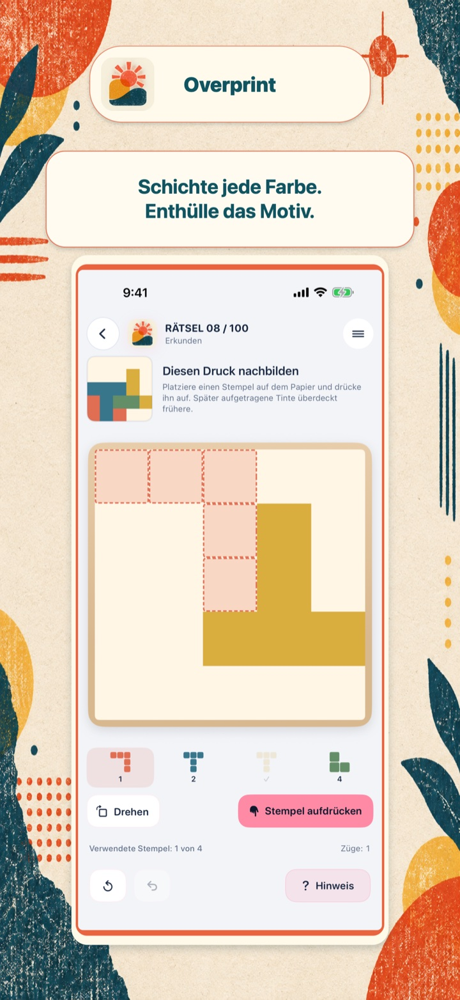
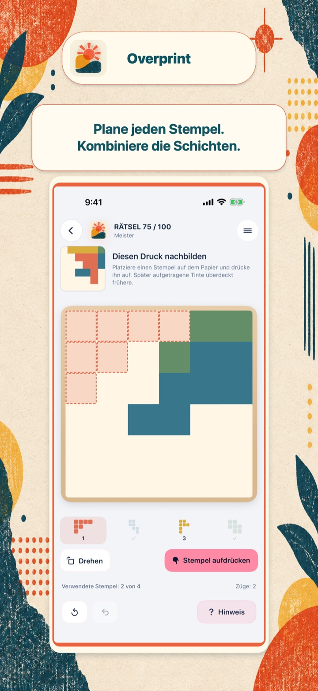
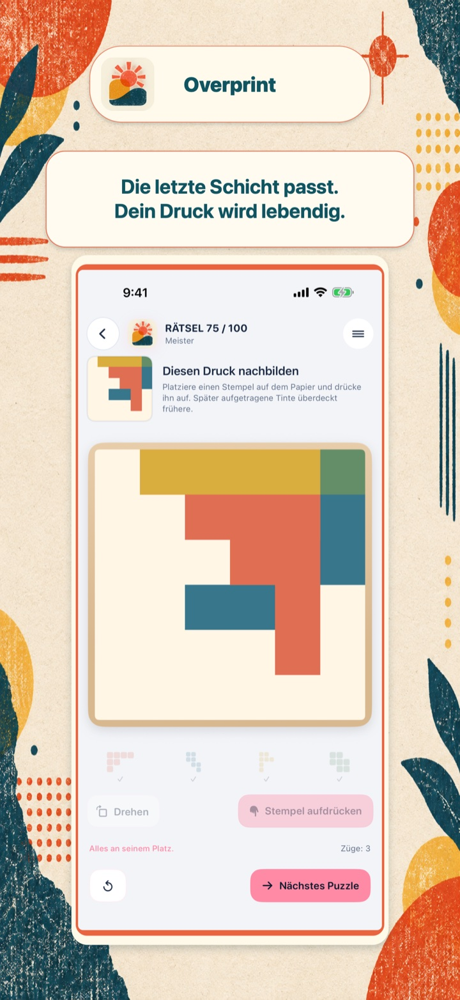
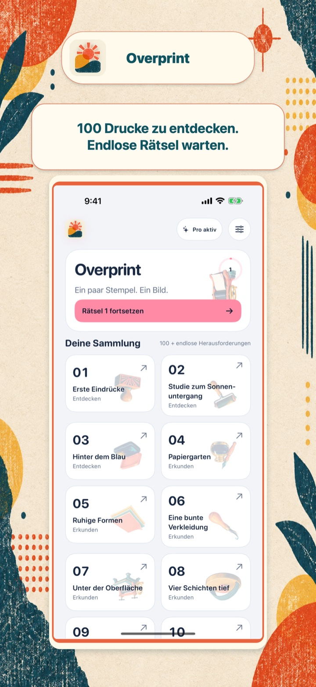

100 gestaltete Rätsel
Eine Entwicklung mit wachsender logischer oder räumlicher Tiefe.
Overprint
Setze jedes Bild aus wenigen Stempeln zusammen.
Demnächst im App Store

Die Idee in Bewegung
Die ersten Rätsel machen Platzierung und Drehung leicht verständlich. Spätere Motive überlagern ihre Formen auf raffinierte Weise. Überlege, welcher Stempel zuerst kommt und welcher das Bild vervollständigt.
Puzzlewelten
Jedes Spiel beginnt mit einer sorgfältig gestalteten Sammlung von 100 Rätseln. Danach halten endlose Herausforderungen dieselben Regeln für neue Aufgaben offen.
Eine Entwicklung mit wachsender logischer oder räumlicher Tiefe.
Erkunde weiter, nachdem die Hauptsammlung abgeschlossen ist.
Denke nach, probiere, mache Züge rückgängig und lerne in deinem Tempo.
Im Spiel
Die vier Ansichten folgen der freigegebenen App-Store-Reihenfolge: Kernmechanik, tieferes Rätsel, gelöster Zustand und Sammlung.



Kostenlos spielbar. Pro, wenn du möchtest.
Das Spiel ist kostenlos spielbar. In der kostenlosen Version kann nach ausgewählten gelösten Rätseln eine Vollbildanzeige erscheinen; für einen Hinweis kann ein belohntes Video angesehen werden.
Das einmalige Pro-Upgrade entfernt Werbung und schaltet Hinweise direkt frei.
Entdecke eine weitere Puzzlewelt
Wechsle die Mechanik, ohne die Sammlung zu verlassen.